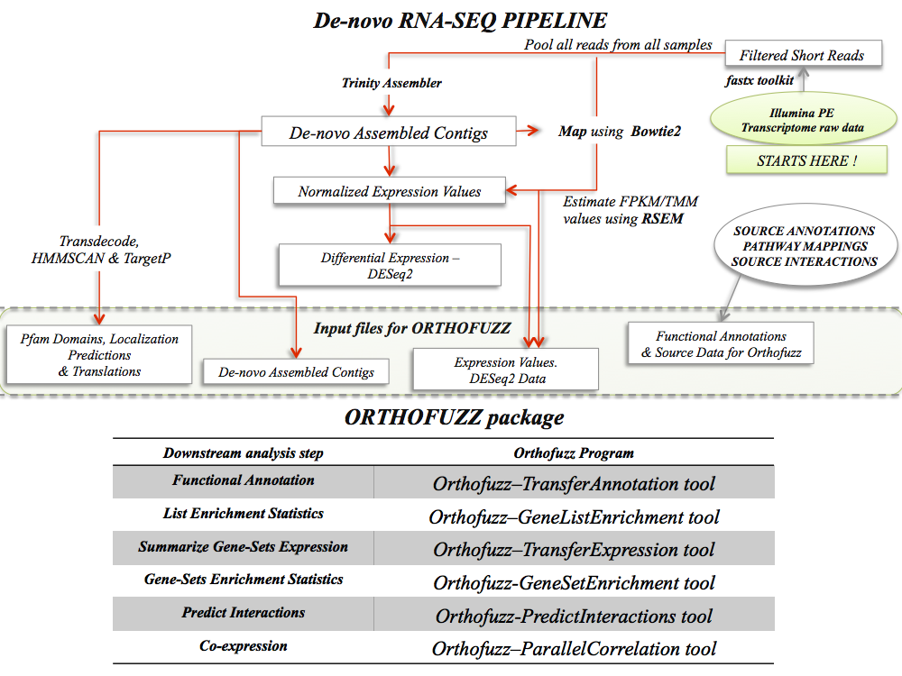

Key terms used in the descriptions:
source organisms: organisms, the annotations of which are used as sources of functional annotations.
source sequences: sequences from the source organisms.
target organism: the denovo sequenced organism, which we are analyzing.
target sequences: sequences from target organisms.
G: The All-vs-All Pairwise Sequence Similarity Network.
Node: A sequence in the pairwise-sequence similarity network.
[CLICK ON TEXT IN BLUE TO GET DETAILED DESCRIPTIONS AND DOWNLOAD LINKS]
Overview:
The short read RNA-Seq data generated by second generation sequencers like Illumna GA IIE and Illumina HiSeq2000 are typically assembled using denovo sequence assemblers like Trinity denovo assembler into contigs. The nature of the denovo assembler algorithms and the short reads results in many-many mapping problem between contigs and gene-families causing uncertainty about the assignment of contigs to gene familes. This warrants imagining the contigs as nodes in a cross-organism/cross-species sequence similarity network. The entire RNA-Seq analysis pipeline downstream of assembly of contigs, read mapping and estimation of expression levels has to be modified to fit the network model.
The Orthofuzz package positions contigs assembled de-novo from RNA-Seq short read data among protein sequences obtained from phylogenetic neighbors of the target organism in a muti-organism pairwise sequence similarity network.
A set of well annotated organisms in the phylogenetic neighborhood of the target organisms are handpicked and an All vs All BLAST carried out on translated contigs and amino-acid sequences to define an All vs All pairwise sequence similarity network with the sequences forming the nodes and the BLAST bit-score used to define the edge weight (higher the bit-score, higher the homology).
The package includes a series of java programs which uses a combination of network topology and edge weights to annotate, analyze and summarize the RNA-Seq data.
Where does Orthofuzz fit into the RNA-Seq Bioinformatics Pipeline ?

List of External Packages used:
JUNG Paralellcolt
Trove
Jblas
ClusterOne
Output formats compatible with:
Cytoscape3
Pathvisio
ClusterOne
Genepattern
Programs in the package:
(Click on names in BLUE to get detailed descriptions and download links)
1. RandomWalkwithRestart.
2. Finding Representative & Maximal Cliques in the Graph.
3. TransferAnnotations from Source Sequences to Target Target Sequences.
4. TransferExpression from Target Contigs to Gene-Sets.
5. Using known interactions in Source Organisms to Predict Interactions in the Target Organisms.
6. Implements methods to estimate Gene-Set Statistics.
7.Implements methods to estimate Gene-List Statistics.
8. Implements methods to estimate coexpression between genes/contigs/gene-sets and estimate statistical significance.
Context of the programs :
Previous work has shown that functional ortholog proteins tends to share more neighbors with higher edge weight when compared to weak homologs
in All-vs-All pairwise sequence similarity networks. Edge weigted random walk with restart is a memory efficient and fast computational method for capturing both shared topological neighborhood and high edge-weight with [0-1] score, thereby making it very useful for measuring orthology between sequences and/or sets of sequences.
Given a set of query nodes and an All-vs-All pairwise sequence similarity network, RandomWalkwithRestart.jar reports a cluster of nodes in the network, which are members of or/and homologous to the query set, provide global and organism normalized scores representing the strength of homology of the node to the query-set and statistical significance obtained by permulation test.
The query-set can have a single node or a set of nodes from the same and/or multiple organisms, whose sequences are in the network. This facilitates querying the network for homologs of gene families with one or more members from different source organisms in the network.
The max normalized orthoscore [0-1] returned for each member node of the cluster is a strong indicator of functional orthology. The RandomWalkwithRestart, therefore is a very powerful tool for [1] transferring functional informations we know about the query sets to the cluster members or for [2] summarizing information we know about the cluster-members to estimate summary statistics for the query-set.
Maximal Cliques: Examination of the topological structure of the sequence similarity network has revealed that the ortholog gene families tend to form Cliques in sequence similarity networks. Therefore, finding maximal/representative cliques in sequence similarity network is quite revealing in terms of identifying contig sequences that are strong members of gene families.
The FindMaximalCliques method lists maximal and representative cliques in the network using the the algorithm proposed by Eppstein, Loffler and Strash [ELS method] for listing all maximal cliques in a sparse graph.
[1] Transferring information from query sets to cluster members:
The standard approach for assigning functional annotations to denovo assembled sequences is based on the observation that there is a high probability for cross organism orthologs to share biological function. Previous work has shown that true orthologs tend to share more neighbors with high edge weights in pairwise All-vs-All pairwise sequence similarity network. Since orthoscore captures this information, we can use the orthoscores for transferring functional annotations associated with the source sequences in the networks to the target sequences.
Given the source sequences and their functional annotations, TransferAnnotations.jar method will transfers functional annotations from the source sequences to the target sequences.
If a gene X is known to interact with gene Y in one/many of the source organisms, PredictInteractions.jar can use the RandomWalkwithRestart.jar to identify corresponding orthologs in the target organisms and predict interactions between contigs/sets of contigs which could be coding for proteins which interacts with each other in the target organisms.
[2] Transferring information from the cluster members to summarize the query sets:
Given mappings of gene-ids in the source organisms to enzymes, TransferExpression.jar method will first use Randomwalkwithrestart.jar to find orthologs of the query sets in the new organisms, summarize the expression values in FPKM/TPM for each query and generate geneset statistics using GeneSetStatistics.jar program described in the next section.
[3] Tools to statistically analyze and summarize the results:
Gene-Set Statistics: The program implements the Fisher combined probability (FCP) method and the Gene Set Enrichment (GSA) permutation and randomization method proposed by Bradley Efron and Rob Tibshirani. The max. mean statistic is used as the test statistic.
Gene-List Statistics: The program uses a weighted count derived from weighted annotations assigned to the target sequences by the TransferAnnotation method in the package. The EASE score ( modified Fisher's Exact Test) is estimated and the statistical significance is reported.
Coexpression: A parallel implementation of coexpression from Paralellcolt package is used for estimating Pearson's Correlation and the statistical significance for the scores are estimated by transforming the ρ to t statistic.
User-Manual Links:
CLICK HERE for the user-manual of the programs.
CLICK HERE for the file formats.
CLICK HERE for a Example Run

{kind=link}